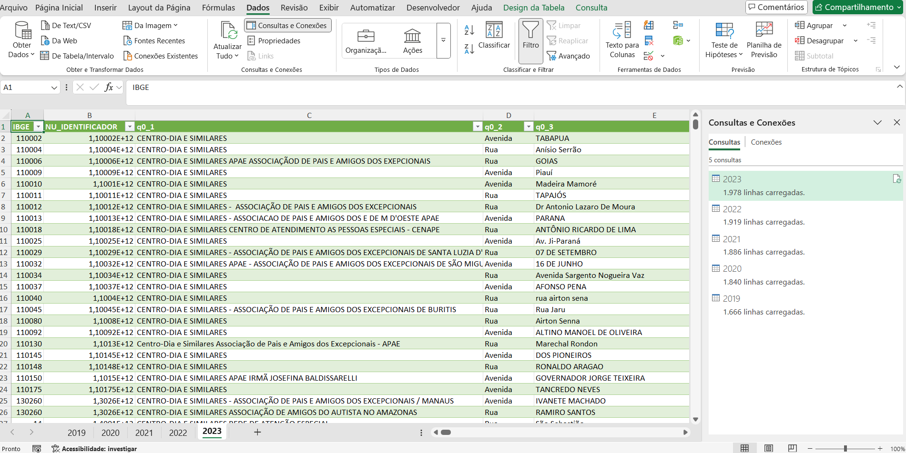
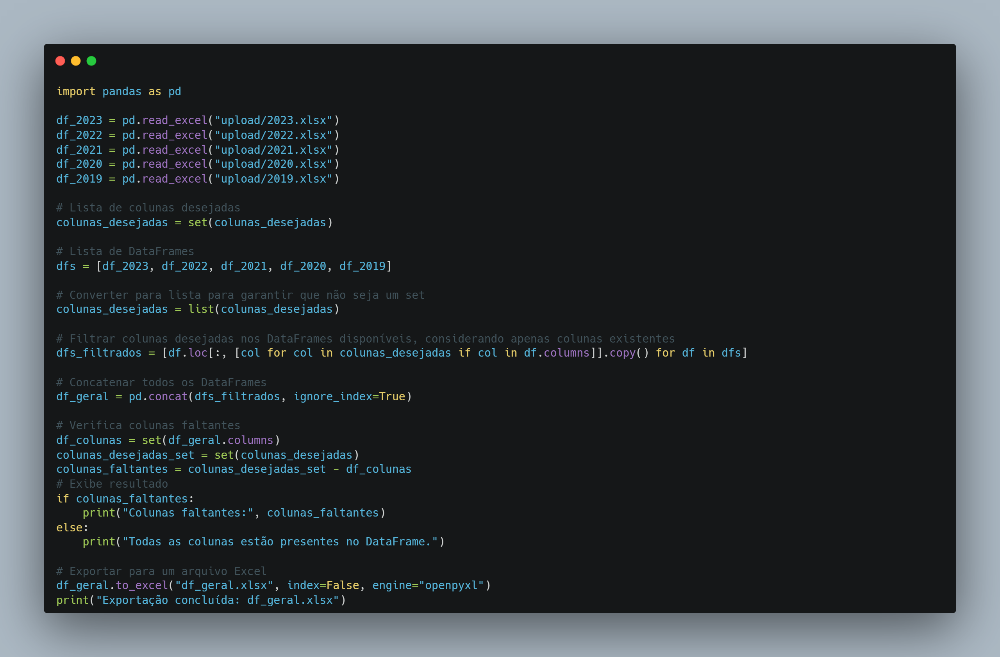
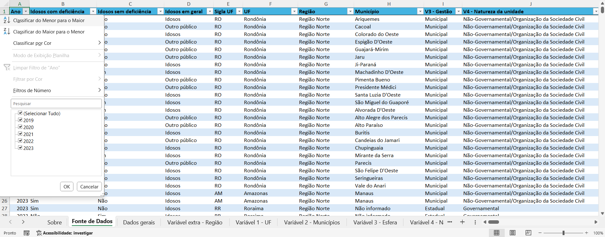
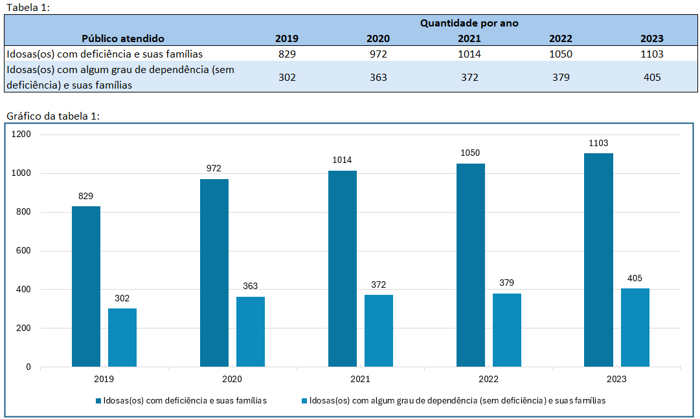
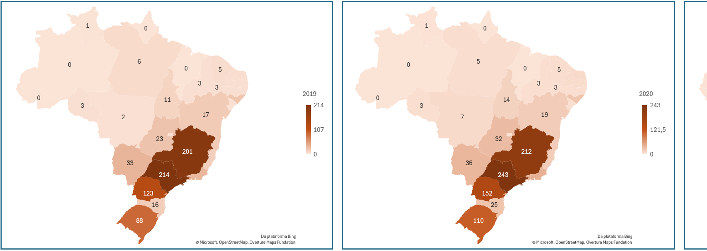

Dados com Rodrigo Junqueira
Desenvolvimento
I. Coleta de dados
- Fiz a coleta dos dados referente aos 5 anos que vão ser analisados.
- Montei uma estrutura de pastas para facilitar o acesso entre os dados coletados.
II. Estudo inicial dos dados
- Cada ano possui sua estrutura de dados disponibilizados, com isso foi necessário identificar os questionários aplicados e a fonte de dados das respostas coletas.
-
Entre os arquivos disponibilizados, cada ano possuia uma fonte de dados com as respostas da coleta
dos questionários aplicados.
Em todos os anos, a fonte de dados de cada ano foi disponibilizado nas extensões ".csv", ".sav" e ".xlsx".
- Em cada ano foi aplicado um questionário único, onde foram alterados as estruturas, ordem das questões, incluído ou removido questões ou alterado as opções das respostas.
-
Sobre as variáveis existentes em cada fonte de dados:
Em 2023 a fonte de dados possui 563 variáveis (colunas).
Em 2022 e 2021, cada um possui 663 variáveis.
Em 2020, 668 variáveis.
Em 2019, 571 variáveis.
- Em todos os anos foram disponibilizados um dicionário para as fontes de dados.
- Antes de iniciar com o processo de transformação dos dados para a análise, foi necessário identificar todas as variáveis solicitadas pelo cliente em todas as fonte de dados, para este processo foi desenvolvida uma documentação no Notion para guiar todo o trabalho.
Em 2023 foram disponibilizados 24 arquivos.
Em 2022, 22 arquivos.
Em 2021, 21 arquivos.
Em 2020, 23 arquivos.
Em 2019, 21 arquivos.

III. Organização e pré-transformação dos dados
- Após identificar cada uma das variáveis, coletei as 5 fonte de dados, coloquei todas elas em um mesmo diretório e renomiei cada uma delas para o respectivo ano (2023, 2022, ...).
- Com os diretório organizado, criei um arquivo no Excel que será o responsável pela transformação dos dados e geração de uma fonte de dados limpa e organizada.
-
Para a transformação dos dados foi escolhido as ferramentas:
Power Query: Que é uma ferramenta poderosa de transformação de dados.
Python com Pandas: Para os ajustes finais e unificação dos dados.

Transformação dos dados
-
No power Query, foram ajustados:
1. O tipo dos dados das variáveis utilizadas;
2. Renomeado as variáveis utilizadas padronizando os 5 anos.
3. Muitas respostas foram armazenadas em formato numérico, com isso precisei substituir os valores para facilitar a identificação das alternativas respondidas.
4. Gerado 5 fontes de dados limpas e organizadas para cada ano.

-
Após a geração das novas fonte de dados, migrei o processo de transformação para o Python devido a
facilidade em remover todas as colunas não utilizadas e mesclar a fonte de dados em um único
arquivo. Para isso, segui as etapas:
1. Importação dos daos no Jupyter Notebook.
2. Criado um dataframe apenas com as variáveis desejadas que já estavam organizadas na documentação do Notion.
3. Feito a mesclagem dos dados para uma única fonte de dados.
4. Exportado o novo arquivo para o Excel.
Abaixo coloco parte do código utilizados:
 - Na nova fonte de dados, temos agora apenas 45 colunas que vão ser utilizadas para responder as variáveis do cliente.
Análise do dados
- Como o cliente solicitou que a entrega fosse realizada no Excel, toda a análise de dados foi realizada nele.
- No Excel, foi criado uma aba "Sobre" com explicação de todo o projeto.
-
Cada variável solicitada foi analisada em uma aba do Excel.

-
Foi entregue junto com a análise a fonte de dados limpa e organizada.

- Em cada variável, foram geradas tabelas quantitativas, percentuais e de variações ao ano, assim como gráficos para todas as tabelas.
-
Para as tabelas quantitativas, foram gerados 2 gráficos de barras com os eixos invertidos, para o
cliente escolher qual deseja utilizar em sua redação.

-
Para as tabelas percentuais, foram gerados gráficos de barras empilhadas e, para aquelas tabelas com
poucas variáveis, também foram gerados gráficos de setores.

-
Para todas as variáveis foram geradas tabelas de variação percentual entre os anos.

-
Algumas variáveis continham dados geográficos na análise, e para essas foram gerados mapas de calor
com as quantidades.
Para todas as variáveis foram geradas tabelas de variação percentual entre os anos.

-
Para todas as variáveis foram disponibilizados informações sobre o estudo, orientações das tabelas e
fornecidos insights importantes.

-
No término da análise, o documento do Excel ficou com 159 tabelas e 214 gráficos.

Resultados
O trabalho foi um sucesso, o cliente ficou muito satisfeito e forneceu um bom feedback.